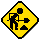
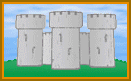
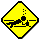
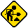
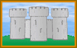
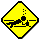
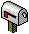
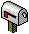

Here are some animated grafix I made:
|  |  |  |

These all looked a lot bigger @ 640 × 480 res. (remember that?)
Hi. Yeah, there’s no GoatWorx; never was. I just called myself that when I started making web pages, oh so long ago. What we have here, then, are a few relics of that era, 1996–7, including these links from the old GW page that are unbelievably still valid. If you have an interest in such things, check ’em out:
Here are some animated grafix I made:
|  |  |  |
These all looked a lot bigger @ 640 × 480 res. (remember that?)
  E-mail: x.cannon@yandex.com
 E-mail: x.cannon@yandex.com